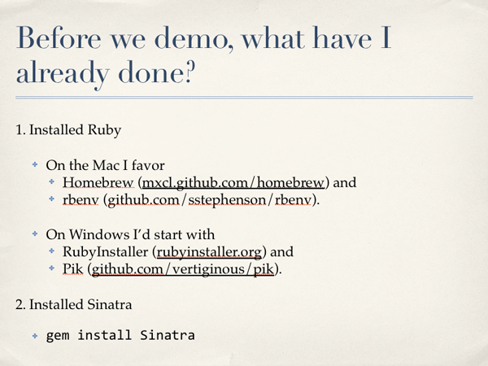

Sven Aas
Lead Web Application Developer
Mount Holyoke College
@svenaas
Powerpoint
But meanwhile ...
Google Presentation
Keynote
Keynote
Keynote
HTML is used to structure content and mark it up,
often semantically
CSS is used to provide presentation styling.
JavaScript is used to add behavioral elements
https://github.com/imakewebthings/deck.js
Examplehttps://github.com/hakimel/reveal.js
ExampleSupports swipe/pinch navigation.
<section>
<h2>Code Highlighting</h2>
<pre><code contenteditable>
<!-- Recursion here. Look away! -->
</code></pre>
</section>
10,000-foot view of your presentation.
Supports swipe/pinch navigation.
Supported via print Stylesheet (Chrome only at this time).
Uses SASS and related tools to make themes more consise.
See notes along with current/next slide and timer
Control presentations with another device.
Control presentation clients
Flowtime
https://github.com/marcolago/flowtime.js Parallax exampleFathom
https://github.com/markdalgleish/fathomFor delivery specifically in those formats
For something small and simple
Sven Aas, Mount Holyoke College
saas at mtholyoke dot edu
@svenaas